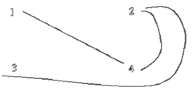
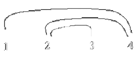
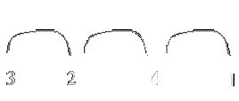

Storing images in a sequence
Background
A web server for a site must store a set of large images in
a sequential device, like a magnetic tape cassette. The images appear in the
pages of the site, one per page. There are links between the pages where the
images belong, so we know which image(s) might be required after some image is
serve
For each image, we consider as direct neighbours the
images which are one link away. If we have four images and image 1 is
linked to image 4, and image 2 is linked to images 3 and 4, we may represent
this graphically as follows:

Figure
2.1 - Links between images
If the images are stored in a sequential device, they must be ordered, and the distance between those that are directly linked depends on the ordering. Two possible orderings for the example above are:
 
ProblemGiven a set of (bi-directional) image dependencies, find an ordering that minimises the maximum distance for two linked images. There are at most 25 images
InputThe input begins with a single positive integer on a line by itself indicating the number of the cases following, each of them as described below. This line is followed by a blank line, and there is also a blank line between two consecutive inputs.
The first input line contains the number N of images. Each of the subsequent N lines, one for each image, contains the number of the image and the numbers of its neighbour images, separated by single spaces.
Output For each test case, the output must follow the description below. The outputs of two consecutive cases will be separated by a blank line.
Two lines, the first with the maximum distance between linked images and the second with an ordering of the images.
Sample Input
1
4
1 4
2 3 4
3 2
4 2 1
Sample Output
1
3 2 4 1